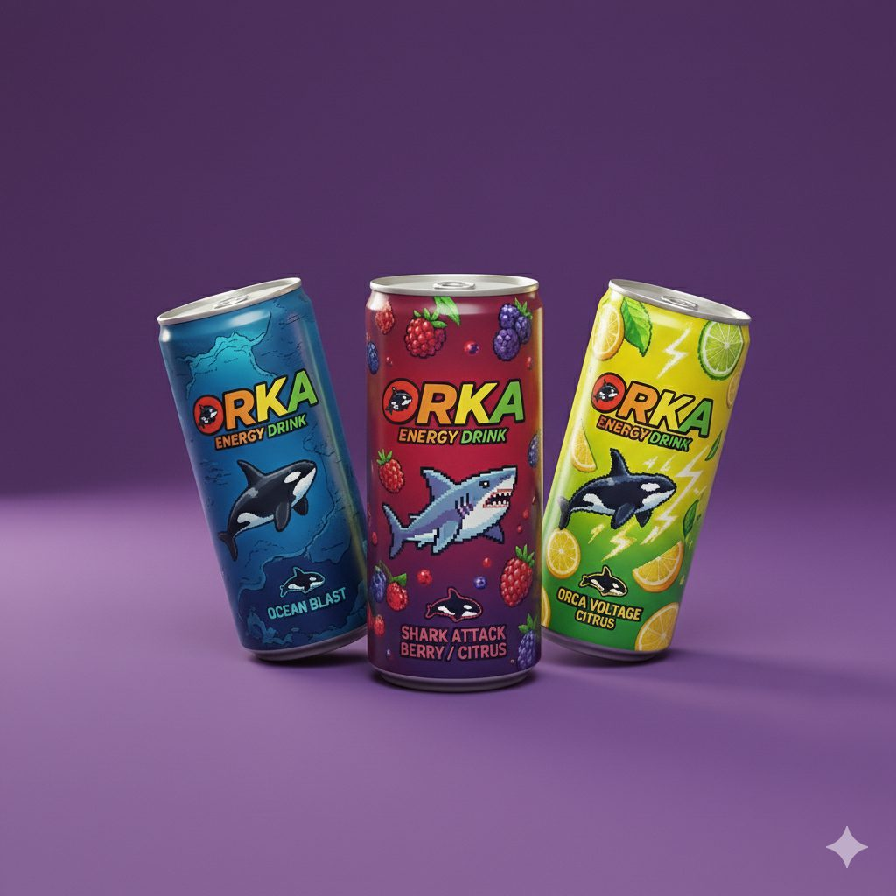
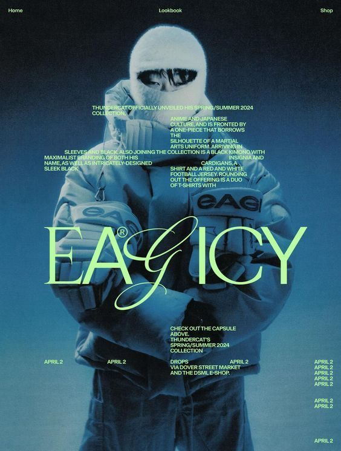
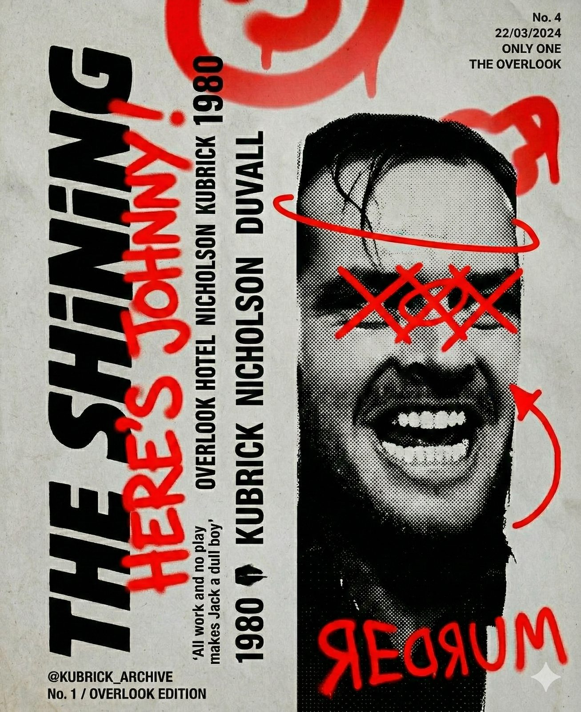
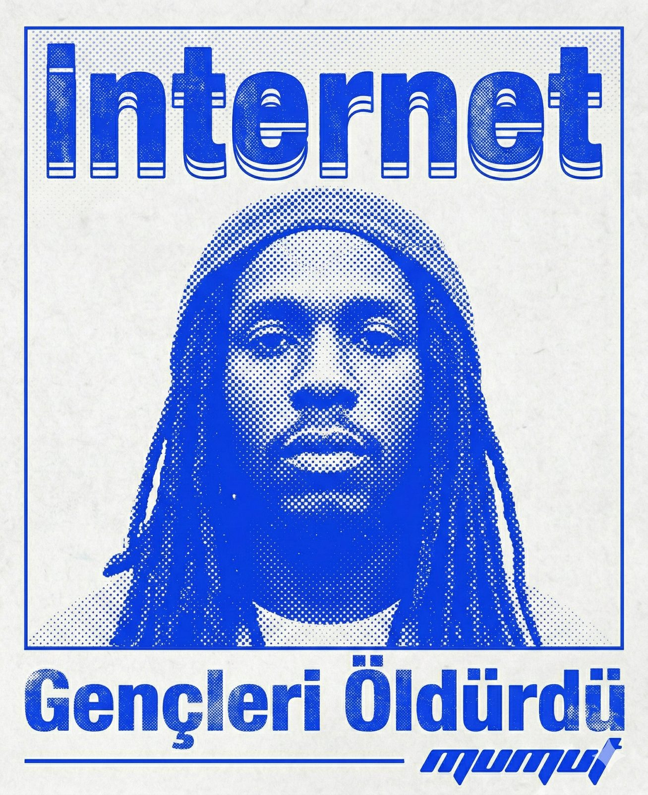
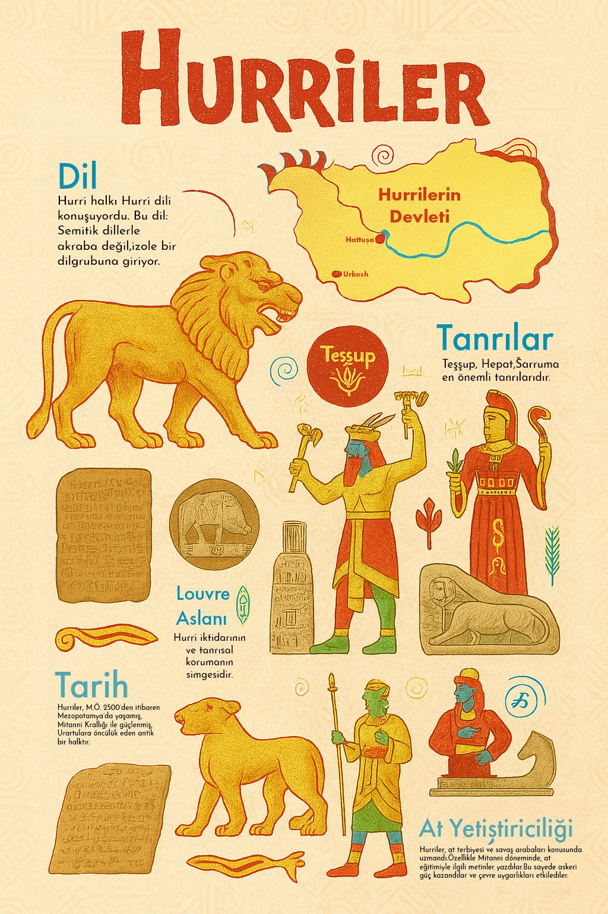
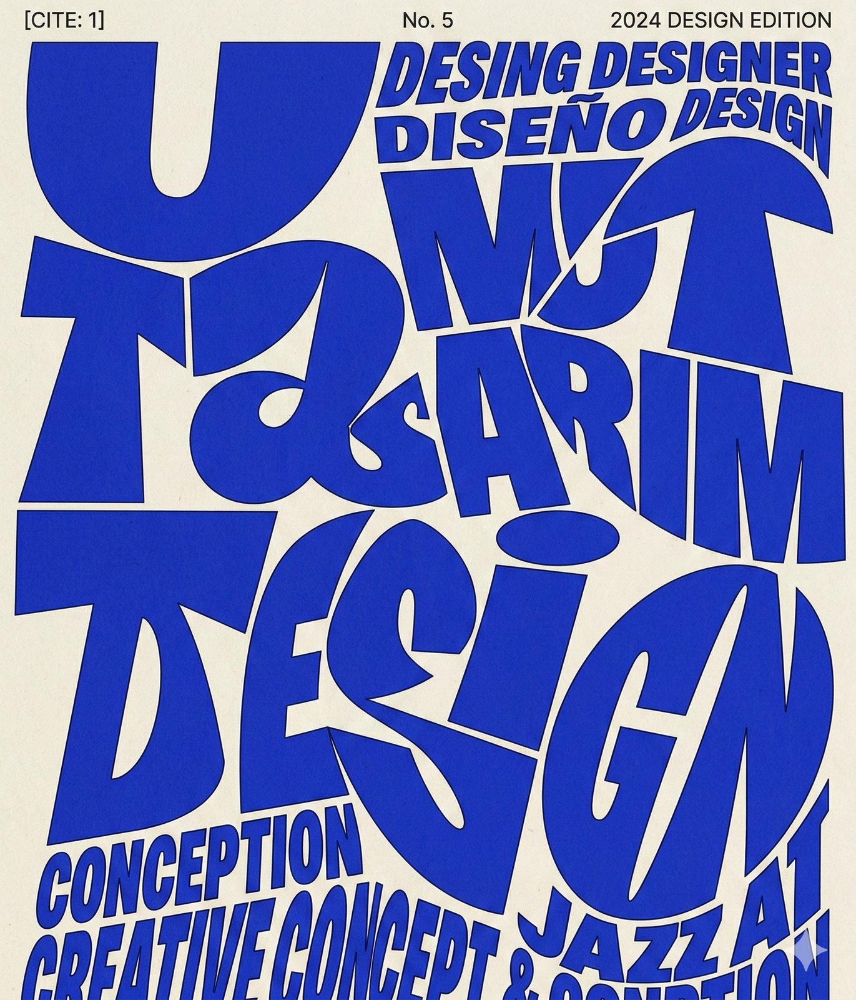

2024 — 2026
Projelerim

ORKA Enerji İçeceği
2026 · Marka & 3BKurgusal bir enerji içeceği markası. Piksel maskot, üç aromalı kutu serisi ve 3B ürün görselleştirmesi; ambalaj tipografisi kutu başına aroma paletinden türüyor.

EAGICY
2025 · AfişBir sokak giyim koleksiyonu için lookbook afişi. Soğuk mavi fotoğrafın üzerinde asit yeşili display tipografi; küçük metin blokları kadrajın içine yerleşiyor.

The Shining · Overlook
2024 · Afiş
İnternet Gençleri Öldürdü
2025 · Afiş
Hurriler
2025 · Bilgilendirme